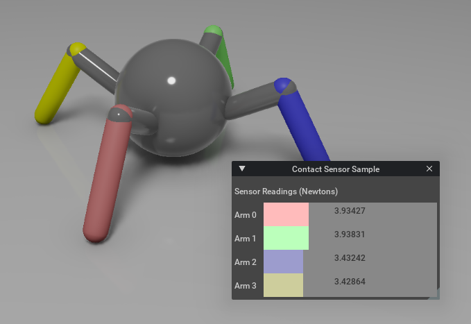

[isaacsim.sensors.camera] Isaac Sim Camera Simulation#
Version: 0.2.9
Provides APIs for camera prims, eg. setting lens distortion and enabling tiled rendering.
Enable Extension#
The extension can be enabled (if not already) in one of the following ways:
Define the next entry as an application argument from a terminal.
APP_SCRIPT.(sh|bat) --enable isaacsim.sensors.camera
Define the next entry under [dependencies] in an experience (.kit) file or an extension configuration (extension.toml) file.
[dependencies]
"isaacsim.sensors.camera" = {}
Open the Window > Extensions menu in a running application instance and search for isaacsim.sensors.camera.
Then, toggle the enable control button if it is not already active.
API#
Python API#
Provides high level functions to deal with a camera prim and its attributes/ properties. |
|
Provides high level functions to deal tiled/batched data from cameras |
- class Camera(
- prim_path: str,
- name: str = 'camera',
- frequency: int | None = None,
- dt: str | None = None,
- resolution: Tuple[int, int] | None = None,
- position: ndarray | None = None,
- orientation: ndarray | None = None,
- translation: ndarray | None = None,
- render_product_path: str | None = None,
Bases:
BaseSensorProvides high level functions to deal with a camera prim and its attributes/ properties. If there is a camera prim present at the path, it will use it. Otherwise, a new Camera prim at the specified prim path will be created.
- Parameters:
prim_path (str) – prim path of the Camera Prim to encapsulate or create.
name (str, optional) – shortname to be used as a key by Scene class. Note: needs to be unique if the object is added to the Scene. Defaults to “camera”.
frequency (Optional[int], optional) – Frequency of the sensor (i.e: how often is the data frame updated). Defaults to None.
dt (Optional[str], optional) – dt of the sensor (i.e: period at which a the data frame updated). Defaults to None.
resolution (Optional[Tuple[int, int]], optional) – resolution of the camera (width, height). Defaults to None.
position (Optional[Sequence[float]], optional) – position in the world frame of the prim. shape is (3, ). Defaults to None, which means left unchanged.
translation (Optional[Sequence[float]], optional) – translation in the local frame of the prim (with respect to its parent prim). shape is (3, ). Defaults to None, which means left unchanged.
orientation (Optional[Sequence[float]], optional) – quaternion orientation in the world/ local frame of the prim (depends if translation or position is specified). quaternion is scalar-first (w, x, y, z). shape is (4, ). Defaults to None, which means left unchanged.
render_product_path (str) – path to an existing render product, will be used instead of creating a new render product the resolution and camera attached to this render product will be set based on the input arguments. Note: Using same render product path on two Camera objects with different camera prims, resolutions is not supported Defaults to None
- property supported_annotators: List[str]#
Returns: List[str]: annotators supported by the camera
- get_render_product_path() str#
- Returns:
gets the path to the render product attached to this camera
- Return type:
string
- set_frequency(value: int) None#
- Parameters:
value (int) – sets the frequency to acquire new data frames
- get_frequency() float#
- Returns:
gets the frequency to acquire new data frames
- Return type:
float
- set_dt(value: float) None#
- Parameters:
value (float) – sets the dt to acquire new data frames
- get_dt() float#
- Returns:
gets the dt to acquire new data frames
- Return type:
float
- get_current_frame(clone=False) dict#
- Parameters:
clone (bool, optional) – if True, returns a deepcopy of the current frame. Defaults to False.
- Returns:
returns the current frame of data
- Return type:
dict
- initialize(physics_sim_view=None) None#
To be called before using this class after a reset of the world
- Parameters:
physics_sim_view (_type_, optional) – _description_. Defaults to None.
- post_reset() None#
Reset the prim to its default state (position and orientation).
Note
For an articulation, in addition to configuring the root prim’s default position and spatial orientation (defined via the
set_default_statemethod), the joint’s positions, velocities, and efforts (defined via theset_joints_default_statemethod) are imposedExample:
>>> prim.post_reset()
- resume() None#
resumes data collection and updating the data frame
- pause() None#
pauses data collection and updating the data frame
- is_paused() bool#
- Returns:
is data collection paused.
- Return type:
bool
- set_resolution(value: Tuple[int, int]) None#
- Parameters:
value (Tuple[int, int]) – width and height respectively.
- get_resolution() Tuple[int, int]#
- Returns:
width and height respectively.
- Return type:
Tuple[int, int]
- get_aspect_ratio() float#
- Returns:
ratio between width and height
- Return type:
float
- get_world_pose(
- camera_axes: str = 'world',
Gets prim’s pose with respect to the world’s frame (always at [0, 0, 0] and unity quaternion not to be confused with /World Prim)
- Parameters:
camera_axes (str, optional) – camera axes, world is (+Z up, +X forward), ros is (+Y up, +Z forward) and usd is (+Y up and -Z forward). Defaults to “world”.
- Returns:
- first index is position in the world frame of the prim. shape is (3, ).
second index is quaternion orientation in the world frame of the prim. quaternion is scalar-first (w, x, y, z). shape is (4, ).
- Return type:
Tuple[np.ndarray, np.ndarray]
- set_world_pose(
- position: Sequence[float] | None = None,
- orientation: Sequence[float] | None = None,
- camera_axes: str = 'world',
Sets prim’s pose with respect to the world’s frame (always at [0, 0, 0] and unity quaternion not to be confused with /World Prim).
- Parameters:
position (Optional[Sequence[float]], optional) – position in the world frame of the prim. shape is (3, ). Defaults to None, which means left unchanged.
orientation (Optional[Sequence[float]], optional) – quaternion orientation in the world frame of the prim. quaternion is scalar-first (w, x, y, z). shape is (4, ). Defaults to None, which means left unchanged.
camera_axes (str, optional) – camera axes, world is (+Z up, +X forward), ros is (+Y up, +Z forward) and usd is (+Y up and -Z forward). Defaults to “world”.
- get_local_pose(camera_axes: str = 'world') None#
Gets prim’s pose with respect to the local frame (the prim’s parent frame in the world axes).
- Parameters:
camera_axes (str, optional) – camera axes, world is (+Z up, +X forward), ros is (+Y up, +Z forward) and usd is (+Y up and -Z forward). Defaults to “world”.
- Returns:
- first index is position in the local frame of the prim. shape is (3, ).
second index is quaternion orientation in the local frame of the prim. quaternion is scalar-first (w, x, y, z). shape is (4, ).
- Return type:
Tuple[np.ndarray, np.ndarray]
- set_local_pose(
- translation: Sequence[float] | None = None,
- orientation: Sequence[float] | None = None,
- camera_axes: str = 'world',
Sets prim’s pose with respect to the local frame (the prim’s parent frame in the world axes).
- Parameters:
translation (Optional[Sequence[float]], optional) – translation in the local frame of the prim (with respect to its parent prim). shape is (3, ). Defaults to None, which means left unchanged.
orientation (Optional[Sequence[float]], optional) – quaternion orientation in the local frame of the prim. quaternion is scalar-first (w, x, y, z). shape is (4, ). Defaults to None, which means left unchanged.
camera_axes (str, optional) – camera axes, world is (+Z up, +X forward), ros is (+Y up, +Z forward) and usd is (+Y up and -Z forward). Defaults to “world”.
- add_normals_to_frame(init_params: dict | None = None) None#
Attach the normals annotator to this camera. :param init_params: Optional annotator parameters
The normals annotator returns:
np.array shape: (width, height, 4) dtype: np.float32
See more details: https://docs.omniverse.nvidia.com/extensions/latest/ext_replicator/annotators_details.html#normals
- remove_normals_from_frame() None#
- add_motion_vectors_to_frame(
- init_params: dict | None = None,
Attach the motion vectors annotator to this camera. :param init_params: Optional annotator parameters
The motion vectors annotator returns:
np.array shape: (width, height, 4) dtype: np.float32
See more details: https://docs.omniverse.nvidia.com/extensions/latest/ext_replicator/annotators_details.html#motion-vectors
- remove_motion_vectors_from_frame() None#
- add_occlusion_to_frame(init_params: dict | None = None) None#
Attach the occlusion annotator to this camera. :param init_params: Optional annotator parameters
The occlusion annotator returns:
np.array shape: (num_objects, 1) dtype: np.dtype([(“instanceId”, “<u4”), (“semanticId”, “<u4”), (“occlusionRatio”, “<f4”)])
- remove_occlusion_from_frame() None#
- add_distance_to_image_plane_to_frame(
- init_params: dict | None = None,
Attach the distance_to_image_plane annotator to this camera. :param init_params: Optional annotator parameters
The distance_to_image_plane annotator returns:
np.array shape: (width, height, 1) dtype: np.float32
See more details: https://docs.omniverse.nvidia.com/extensions/latest/ext_replicator/annotators_details.html#distance-to-image-plane
- remove_distance_to_image_plane_from_frame() None#
- add_distance_to_camera_to_frame(
- init_params: dict | None = None,
Attach the distance_to_camera_to_frame annotator to this camera. :param init_params: Optional annotator parameters
The distance_to_camera_to_frame annotator returns:
np.array shape: (width, height, 1) dtype: np.float32
See more details: https://docs.omniverse.nvidia.com/extensions/latest/ext_replicator/annotators_details.html#distance-to-camera
- remove_distance_to_camera_from_frame() None#
- add_bounding_box_2d_tight_to_frame(
- init_params: dict | None = None,
Attach the bounding_box_2d_tight annotator to this camera. :param init_params: Optional annotator parameters (e.g. init_params={“semanticTypes”: [“prim”]})
- The bounding_box_2d_tight annotator returns:
np.array shape: (num_objects, 1) dtype: np.dtype([
(“semanticId”, “<u4”), (“x_min”, “<i4”), (“y_min”, “<i4”), (“x_max”, “<i4”), (“y_max”, “<i4”), (“occlusionRatio”, “<f4”),
])
See more details: https://docs.omniverse.nvidia.com/extensions/latest/ext_replicator/annotators_details.html#bounding-box-2d-tight
- remove_bounding_box_2d_tight_from_frame() None#
- add_bounding_box_2d_loose_to_frame(
- init_params: dict | None = None,
Attach the bounding_box_2d_loose annotator to this camera. :param init_params: Optional annotator parameters (e.g. init_params={“semanticTypes”: [“prim”]})
The bounding_box_2d_loose annotator returns:
np.array shape: (num_objects, 1) dtype: np.dtype([
(“semanticId”, “<u4”), (“x_min”, “<i4”), (“y_min”, “<i4”), (“x_max”, “<i4”), (“y_max”, “<i4”), (“occlusionRatio”, “<f4”),
])
See more details: https://docs.omniverse.nvidia.com/extensions/latest/ext_replicator/annotators_details.html#bounding-box-2d-loose
- remove_bounding_box_2d_loose_from_frame() None#
- add_bounding_box_3d_to_frame(
- init_params: dict | None = None,
Attach the bounding_box_3d annotator to this camera. :param init_params: Optional annotator parameters (e.g. init_params={“semanticTypes”: [“prim”]})
See more details: https://docs.omniverse.nvidia.com/extensions/latest/ext_replicator/annotators_details.html#bounding-box-3d
- remove_bounding_box_3d_from_frame() None#
- add_semantic_segmentation_to_frame(
- init_params: dict | None = None,
Attach the semantic_segmentation annotator to this camera. :param init_params: Optional parameters specifying the parameters to initialize the annotator with
The semantic_segmentation annotator returns:
np.array shape: (width, height, 1) or (width, height, 4) if colorize is set to true dtype: np.uint32 or np.uint8 if colorize is set to true (e.g. init_params={“colorize”: True})
See more details: https://docs.omniverse.nvidia.com/extensions/latest/ext_replicator/annotators_details.html#semantic-segmentation
- remove_semantic_segmentation_from_frame() None#
- add_instance_id_segmentation_to_frame(
- init_params: dict | None = None,
Attach the instance_id_segmentation annotator to this camera. :param init_params: Optional parameters specifying the parameters to initialize the annotator with
The instance_id_segmentation annotator returns:
np.array shape: (width, height, 1) or (width, height, 4) if colorize is set to true dtype: np.uint32 or np.uint8 if colorize is set to true (e.g. init_params={“colorize”: True})
See more details: https://docs.omniverse.nvidia.com/extensions/latest/ext_replicator/annotators_details.html#instance-id-segmentation
- remove_instance_id_segmentation_from_frame() None#
- add_instance_segmentation_to_frame(
- init_params: dict | None = None,
Attach the instance_segmentation annotator to this camera. The main difference between instance id segmentation and instance segmentation are that instance segmentation annotator goes down the hierarchy to the lowest level prim which has semantic labels, which instance id segmentation always goes down to the leaf prim. :param init_params: Optional parameters specifying the parameters to initialize the annot (e.g. init_params={“colorize”: True})
The instance_segmentation annotator returns:
np.array shape: (width, height, 1) or (width, height, 4) if colorize is set to true dtype: np.uint32 or np.uint8 if colorize is set to true
See more details: https://docs.omniverse.nvidia.com/extensions/latest/ext_replicator/annotators_details.html#instance-segmentation
- remove_instance_segmentation_from_frame() None#
- add_pointcloud_to_frame(
- include_unlabelled: bool = False,
- init_params: dict | None = None,
Attach the pointcloud annotator to this camera. :param include_unlabelled: Optional parameter to include unlabelled points in the pointcloud :param init_params: Optional parameters specifying the parameters to initialize the annotator with
The pointcloud annotator returns:
np.array shape: (num_points, 3) dtype: np.float32
See more details: https://docs.omniverse.nvidia.com/extensions/latest/ext_replicator/annotators_details.html#point-cloud
- remove_pointcloud_from_frame() None#
- get_rgba() ndarray#
- Returns:
(N x 4) RGBa color data for each point.
- Return type:
rgba (np.ndarray)
- get_rgb() ndarray#
- Returns:
(N x 3) RGB color data for each point.
- Return type:
rgb (np.ndarray)
- get_depth() ndarray#
- Returns:
(n x m x 1) depth data for each point.
- Return type:
depth (np.ndarray)
- get_pointcloud() ndarray#
- Returns:
(N x 3) 3d points (X, Y, Z) in camera frame. Shape is (N x 3) where N is the number of points.
- Return type:
pointcloud (np.ndarray)
Note
This currently uses the depth annotator to generate the pointcloud. In the future, this will be switched to use the pointcloud annotator.
- get_focal_length() float#
- Returns:
Longer Lens Lengths Narrower FOV, Shorter Lens Lengths Wider FOV
- Return type:
float
- set_focal_length(value: float)#
- Parameters:
value (float) – Longer Lens Lengths Narrower FOV, Shorter Lens Lengths Wider FOV
- get_focus_distance() float#
- Returns:
Distance from the camera to the focus plane (in stage units).
- Return type:
float
- set_focus_distance(value: float)#
The distance at which perfect sharpness is achieved.
- Parameters:
value (float) – Distance from the camera to the focus plane (in stage units).
- get_lens_aperture() float#
- Returns:
controls lens aperture (i.e focusing). 0 turns off focusing.
- Return type:
float
- set_lens_aperture(value: float)#
- Controls Distance Blurring. Lower Numbers decrease focus range, larger
numbers increase it.
- Parameters:
value (float) – controls lens aperture (i.e focusing). 0 turns off focusing.
- get_horizontal_aperture() float#
_ :returns: Emulates sensor/film width on a camera :rtype: float
- set_horizontal_aperture(value: float) None#
- Parameters:
value (Optional[float], optional) – Emulates sensor/film width on a camera. Defaults to None.
- get_vertical_aperture() float#
- Returns:
Emulates sensor/film height on a camera.
- Return type:
float
- set_vertical_aperture(value: float) None#
- Parameters:
value (Optional[float], optional) – Emulates sensor/film height on a camera. Defaults to None.
- get_clipping_range() Tuple[float, float]#
- Returns:
near_distance and far_distance respectively.
- Return type:
Tuple[float, float]
- set_clipping_range(
- near_distance: float | None = None,
- far_distance: float | None = None,
Clips the view outside of both near and far range values.
- Parameters:
near_distance (Optional[float], optional) – value to be used for near clipping. Defaults to None.
far_distance (Optional[float], optional) – value to be used for far clipping. Defaults to None.
- get_projection_type() str#
- Returns:
pinhole, fisheyeOrthographic, fisheyeEquidistant, fisheyeEquisolid, fisheyePolynomial or fisheyeSpherical
- Return type:
str
- set_projection_type(value: str) None#
- Parameters:
value (str) – pinhole: Standard Camera Projection (Disable Fisheye) fisheyeOrthographic: Full Frame using Orthographic Correction fisheyeEquidistant: Full Frame using Equidistant Correction fisheyeEquisolid: Full Frame using Equisolid Correction fisheyePolynomial: 360 Degree Spherical Projection fisheyeSpherical: 360 Degree Full Frame Projection
- get_projection_mode() str#
- Returns:
perspective or orthographic.
- Return type:
str
- set_projection_mode(value: str) None#
Sets camera to perspective or orthographic mode.
- Parameters:
value (str) – perspective or orthographic.
- get_stereo_role() str#
- Returns:
mono, left or right.
- Return type:
str
- set_stereo_role(value: str) None#
- Parameters:
value (str) – mono, left or right.
- set_fisheye_polynomial_properties(
- nominal_width: float | None,
- nominal_height: float | None,
- optical_centre_x: float | None,
- optical_centre_y: float | None,
- max_fov: float | None,
- polynomial: Sequence[float] | None,
- Parameters:
nominal_width (Optional[float]) – Rendered Width (pixels)
nominal_height (Optional[float]) – Rendered Height (pixels)
optical_centre_x (Optional[float]) – Horizontal Render Position (pixels)
optical_centre_y (Optional[float]) – Vertical Render Position (pixels)
max_fov (Optional[float]) – maximum field of view (pixels)
polynomial (Optional[Sequence[float]]) – polynomial equation coefficients (sequence of 5 numbers) starting from A0, A1, A2, A3, A4
- set_matching_fisheye_polynomial_properties(
- nominal_width: float,
- nominal_height: float,
- optical_centre_x: float,
- optical_centre_y: float,
- max_fov: float | None,
- distortion_model: Sequence[float],
- distortion_fn: Callable,
Approximates given distortion with ftheta fisheye polynomial coefficients. :param nominal_width: Rendered Width (pixels) :type nominal_width: float :param nominal_height: Rendered Height (pixels) :type nominal_height: float :param optical_centre_x: Horizontal Render Position (pixels) :type optical_centre_x: float :param optical_centre_y: Vertical Render Position (pixels) :type optical_centre_y: float :param max_fov: maximum field of view (pixels) :type max_fov: Optional[float] :param distortion_model: distortion model coefficients :type distortion_model: Sequence[float] :param distortion_fn: distortion function that takes points and returns distorted points :type distortion_fn: Callable
- set_rational_polynomial_properties(
- nominal_width: float,
- nominal_height: float,
- optical_centre_x: float,
- optical_centre_y: float,
- max_fov: float | None,
- distortion_model: Sequence[float],
Approximates rational polynomial distortion with ftheta fisheye polynomial coefficients. :param nominal_width: Rendered Width (pixels) :type nominal_width: float :param nominal_height: Rendered Height (pixels) :type nominal_height: float :param optical_centre_x: Horizontal Render Position (pixels) :type optical_centre_x: float :param optical_centre_y: Vertical Render Position (pixels) :type optical_centre_y: float :param max_fov: maximum field of view (pixels) :type max_fov: Optional[float] :param distortion_model: rational polynomial distortion model coefficients (k1, k2, p1, p2, k3, k4, k5, k6) :type distortion_model: Sequence[float]
- set_kannala_brandt_properties(
- nominal_width: float,
- nominal_height: float,
- optical_centre_x: float,
- optical_centre_y: float,
- max_fov: float | None,
- distortion_model: Sequence[float],
Approximates kannala brandt distortion with ftheta fisheye polynomial coefficients. :param nominal_width: Rendered Width (pixels) :type nominal_width: float :param nominal_height: Rendered Height (pixels) :type nominal_height: float :param optical_centre_x: Horizontal Render Position (pixels) :type optical_centre_x: float :param optical_centre_y: Vertical Render Position (pixels) :type optical_centre_y: float :param max_fov: maximum field of view (pixels) :type max_fov: Optional[float] :param distortion_model: kannala brandt generic distortion model coefficients (k1, k2, k3, k4) :type distortion_model: Sequence[float]
- get_fisheye_polynomial_properties() Tuple[float, float, float, float, float, List]#
- Returns:
- nominal_width, nominal_height, optical_centre_x,
optical_centre_y, max_fov and polynomial respectively.
- Return type:
Tuple[float, float, float, float, float, List]
- set_shutter_properties(
- delay_open: float | None = None,
- delay_close: float | None = None,
- Parameters:
delay_open (Optional[float], optional) – Used with Motion Blur to control blur amount, increased values delay shutter opening. Defaults to None.
delay_close (Optional[float], optional) – Used with Motion Blur to control blur amount, increased values forward the shutter close. Defaults to None.
- get_shutter_properties() Tuple[float, float]#
- Returns:
delay_open and delay close respectively.
- Return type:
Tuple[float, float]
- get_view_matrix_ros()#
3D points in World Frame -> 3D points in Camera Ros Frame
- Returns:
- the view matrix that transforms 3d points in the world frame to 3d points in the camera axes
with ros camera convention.
- Return type:
np.ndarray
- get_intrinsics_matrix() ndarray#
- Returns:
the intrinsics of the camera (used for calibration)
- Return type:
np.ndarray
- get_image_coords_from_world_points(
- points_3d: ndarray,
- Using pinhole perspective projection, this method projects 3d points in the world frame to the image
plane giving the pixel coordinates [[0, width], [0, height]]
- Parameters:
points_3d (np.ndarray) – 3d points (X, Y, Z) in world frame. shape is (n, 3) where n is the number of points.
- Returns:
2d points (u, v) corresponds to the pixel coordinates. shape is (n, 2) where n is the number of points.
- Return type:
np.ndarray
- get_world_points_from_image_coords(
- points_2d: ndarray,
- depth: ndarray,
- Using pinhole perspective projection, this method does the inverse projection given the depth of the
pixels
- Parameters:
points_2d (np.ndarray) – 2d points (u, v) corresponds to the pixel coordinates. shape is (n, 2) where n is the number of points.
depth (np.ndarray) – depth corresponds to each of the pixel coords. shape is (n,)
- Returns:
(n, 3) 3d points (X, Y, Z) in world frame. shape is (n, 3) where n is the number of points.
- Return type:
np.ndarray
- apply_visual_material(
- visual_material: VisualMaterial,
- weaker_than_descendants: bool = False,
Apply visual material to the held prim and optionally its descendants.
- Parameters:
visual_material (VisualMaterial) – visual material to be applied to the held prim. Currently supports PreviewSurface, OmniPBR and OmniGlass.
weaker_than_descendants (bool, optional) – True if the material shouldn’t override the descendants materials, otherwise False. Defaults to False.
Example:
>>> from isaacsim.core.api.materials import OmniGlass >>> >>> # create a dark-red glass visual material >>> material = OmniGlass( ... prim_path="/World/material/glass", # path to the material prim to create ... ior=1.25, ... depth=0.001, ... thin_walled=False, ... color=np.array([0.5, 0.0, 0.0]) ... ) >>> prim.apply_visual_material(material)
- get_applied_visual_material() VisualMaterial#
Return the current applied visual material in case it was applied using apply_visual_material or it’s one of the following materials that was already applied before: PreviewSurface, OmniPBR and OmniGlass.
- Returns:
the current applied visual material if its type is currently supported.
- Return type:
Example:
>>> # given a visual material applied >>> prim.get_applied_visual_material() <isaacsim.core.api.materials.omni_glass.OmniGlass object at 0x7f36263106a0>
- get_default_state() XFormPrimState#
Get the default prim states (spatial position and orientation).
- Returns:
an object that contains the default state of the prim (position and orientation)
- Return type:
Example:
>>> state = prim.get_default_state() >>> state <isaacsim.core.utils.types.XFormPrimState object at 0x7f33addda650> >>> >>> state.position [-4.5299529e-08 -1.8347054e-09 -2.8610229e-08] >>> state.orientation [1. 0. 0. 0.]
- get_horizontal_fov() float#
- Returns:
horizontal field of view in pixels
- Return type:
float
- get_local_scale() ndarray#
Get prim’s scale with respect to the local frame (the parent’s frame)
- Returns:
scale applied to the prim’s dimensions in the local frame. shape is (3, ).
- Return type:
np.ndarray
Example:
>>> prim.get_local_scale() [1. 1. 1.]
- get_visibility() bool#
- Returns:
true if the prim is visible in stage. false otherwise.
- Return type:
bool
Example:
>>> # get the visible state of an visible prim on the stage >>> prim.get_visibility() True
- get_world_scale() ndarray#
Get prim’s scale with respect to the world’s frame
- Returns:
scale applied to the prim’s dimensions in the world frame. shape is (3, ).
- Return type:
np.ndarray
Example:
>>> prim.get_world_scale() [1. 1. 1.]
- is_valid() bool#
Check if the prim path has a valid USD Prim at it
- Returns:
True is the current prim path corresponds to a valid prim in stage. False otherwise.
- Return type:
bool
Example:
>>> # given an existing and valid prim >>> prims.is_valid() True
- is_visual_material_applied() bool#
Check if there is a visual material applied
- Returns:
True if there is a visual material applied. False otherwise.
- Return type:
bool
Example:
>>> # given a visual material applied >>> prim.is_visual_material_applied() True
- property name: str | None#
Returns: str: name given to the prim when instantiating it. Otherwise None.
- property non_root_articulation_link: bool#
Used to query if the prim is a non root articulation link
- Returns:
True if the prim itself is a non root link
- Return type:
bool
Example:
>>> # for a wrapped articulation (where the root prim has the Physics Articulation Root property applied) >>> prim.non_root_articulation_link False
- property prim: pxr.Usd.Prim#
Returns: Usd.Prim: USD Prim object that this object holds.
- property prim_path: str#
Returns: str: prim path in the stage
- set_default_state(
- position: Sequence[float] | None = None,
- orientation: Sequence[float] | None = None,
Set the default state of the prim (position and orientation), that will be used after each reset.
- Parameters:
position (Optional[Sequence[float]], optional) – position in the world frame of the prim. shape is (3, ). Defaults to None, which means left unchanged.
orientation (Optional[Sequence[float]], optional) – quaternion orientation in the world frame of the prim. quaternion is scalar-first (w, x, y, z). shape is (4, ). Defaults to None, which means left unchanged.
Example:
>>> # configure default state >>> prim.set_default_state(position=np.array([1.0, 0.5, 0.0]), orientation=np.array([1, 0, 0, 0])) >>> >>> # set default states during post-reset >>> prim.post_reset()
- set_local_scale(scale: Sequence[float] | None) None#
Set prim’s scale with respect to the local frame (the prim’s parent frame).
- Parameters:
scale (Optional[Sequence[float]]) – scale to be applied to the prim’s dimensions. shape is (3, ). Defaults to None, which means left unchanged.
Example:
>>> # scale prim 10 times smaller >>> prim.set_local_scale(np.array([0.1, 0.1, 0.1]))
- set_visibility(visible: bool) None#
Set the visibility of the prim in stage
- Parameters:
visible (bool) – flag to set the visibility of the usd prim in stage.
Example:
>>> # make prim not visible in the stage >>> prim.set_visibility(visible=False)
- get_vertical_fov() float#
- Returns:
vertical field of view in pixels
- Return type:
float
- class CameraView(
- prim_paths_expr: str | None = None,
- name: str = 'camera_prim_view',
- camera_resolution: Tuple[int, int] = (256, 256),
- output_annotators: List[str] | None = ['rgb', 'depth'],
- positions: ndarray | Tensor | warp.array | None = None,
- translations: ndarray | Tensor | warp.array | None = None,
- orientations: ndarray | Tensor | warp.array | None = None,
- scales: ndarray | Tensor | warp.array | None = None,
- visibilities: ndarray | Tensor | warp.array | None = None,
- reset_xform_properties: bool = True,
Bases:
XFormPrimProvides high level functions to deal tiled/batched data from cameras
Annotator type - Channels - Dtype
"rgb"- 3 -uint8"rgba"- 4 -uint8"depth"/"distance_to_image_plane"- 1 -float32"distance_to_camera"- 1 -float32"normals"- 4 -float32"motion_vectors"- 4 -float32"semantic_segmentation"- 1 -uint32"instance_segmentation_fast"- 1 -int32"instance_id_segmentation_fast"- 1 -int32- Parameters:
prim_paths_expr – Prim paths regex to encapsulate all prims that match it. E.g.: “/World/Env[1-5]/Camera” will match /World/Env1/Camera, /World/Env2/Camera..etc. Additionally a list of regex can be provided.
camera_resolution – Resolution of each sensor (width, height).
output_annotators – Annotator/sensor types to configure.
name (str, optional) – Shortname to be used as a key by Scene class. Note: needs to be unique if the object is added to the Scene.
is (positions Default positions in the world frame of the prim. Shape) – Defaults to None, which means left unchanged.
translations – Default translations in the local frame of the prims (with respect to its parent prims). shape is (N, 3). Defaults to None, which means left unchanged.
orientations – Default quaternion orientations in the world/ local frame of the prim (depends if translation or position is specified). Quaternion is scalar-first (w, x, y, z). Shape is (N, 4). Defaults to None, which means left unchanged.
scales – Local scales to be applied to the prim’s dimensions. Shape is (N, 3). Defaults to None, which means left unchanged.
visibilities – Set to False for an invisible prim in the stage while rendering. Shape is (N,). Defaults to None.
reset_xform_properties – True if the prims don’t have the right set of xform properties (i.e: translate, orient and scale) ONLY and in that order. Set this parameter to False if the object were cloned using using the cloner api in isaacsim.core.cloner. Defaults to True.
- Raises:
Exception – if translations and positions defined at the same time.
Exception – No prim was matched using the prim_paths_expr provided.
- get_render_product_path() str#
Retrieve the file path of the render product associated with the tiled sensor.
- Returns:
The path to the render product, or None if not available.
- Return type:
str
- set_resolutions(
- resolution: Tuple[int, int],
Set the resolutions for all cameras, updating the tiled sensor configuration if changed.
- Parameters:
resolution (Tuple[int, int]) – The new resolution to apply to all cameras.
- get_resolutions() Tuple[int, int]#
Retrieve the current resolution setting for all cameras.
- Returns:
The resolution of the cameras.
- Return type:
Tuple[int, int]
- get_aspect_ratios() float#
Calculate the aspect ratio of the cameras based on current resolution settings.
- Returns:
The aspect ratio, defined as width divided by height.
- Return type:
float
- get_world_poses(
- indices: ndarray | list | Tensor | warp.array | None = None,
- camera_axes: str = 'world',
- usd: bool = True,
Get the poses of the prims in the view with respect to the world’s frame
- Parameters:
indices (Optional[Union[np.ndarray, list, torch.Tensor, wp.array]], optional) – indices to specify which prims to query. Shape (M,). Where M <= size of the encapsulated prims in the view. Defaults to None (i.e: all prims in the view).
usd (bool, optional) – True to query from usd. Otherwise False to query from Fabric data. Defaults to True.
- Returns:
- first index is positions in the world frame of the prims. shape is (M, 3).
second index is quaternion orientations in the world frame of the prims. quaternion is scalar-first (w, x, y, z). shape is (M, 4).
- Return type:
Union[Tuple[np.ndarray, np.ndarray], Tuple[torch.Tensor, torch.Tensor], Tuple[wp.indexedarray, wp.indexedarray]]
Example:
- set_world_poses(
- positions: ndarray | Tensor | warp.array | None = None,
- orientations: ndarray | Tensor | warp.array | None = None,
- indices: ndarray | list | Tensor | warp.array | None = None,
- camera_axes: str = 'world',
- usd: bool = True,
Set the world poses for all cameras, adjusting their positions and orientations based on specified indices and coordinate system.
- Parameters:
positions (Optional[Union[np.ndarray, torch.Tensor, wp.array]]) – New positions for the cameras.
orientations (Optional[Union[np.ndarray, torch.Tensor, wp.array]]) – New orientations for the cameras.
indices (Optional[Union[np.ndarray, list, torch.Tensor, wp.array]]) – Specific cameras to update.
camera_axes (str) – The coordinate system to use (‘world’, ‘ros’, ‘usd’).
usd (bool, optional) – True to query from usd. Otherwise False to query from Fabric data. Defaults to True.
- Raises:
Exception – If the provided camera_axes is not supported.
- get_local_poses(
- indices: ndarray | list | Tensor | warp.array | None = None,
- camera_axes: str = 'world',
Get prim poses in the view with respect to the local frame (the prim’s parent frame)
- Parameters:
indices (Optional[Union[np.ndarray, list, torch.Tensor, wp.array]], optional) – indices to specify which prims to query. Shape (M,). Where M <= size of the encapsulated prims in the view. Defaults to None (i.e: all prims in the view).
- Returns:
- first index is positions in the local frame of the prims. shape is (M, 3).
second index is quaternion orientations in the local frame of the prims. quaternion is scalar-first (w, x, y, z). shape is (M, 4).
- Return type:
Union[Tuple[np.ndarray, np.ndarray], Tuple[torch.Tensor, torch.Tensor], Tuple[wp.indexedarray, wp.indexedarray]]
Example:
- set_local_poses(
- positions: ndarray | Tensor | warp.array | None = None,
- orientations: ndarray | Tensor | warp.array | None = None,
- indices: ndarray | list | Tensor | warp.array | None = None,
- camera_axes: str = 'world',
Set the local poses for all cameras, adjusting their positions and orientations based on specified indices and coordinate system.
- Parameters:
positions (Optional[Union[np.ndarray, torch.Tensor, wp.array]]) – New positions for the cameras.
orientations (Optional[Union[np.ndarray, torch.Tensor, wp.array]]) – New orientations for the cameras.
indices (Optional[Union[np.ndarray, list, torch.Tensor, wp.array]]) – Specific cameras to update.
camera_axes (str) – The coordinate system to use (‘world’, ‘ros’, ‘usd’).
- Raises:
Exception – If the provided camera_axes is not supported.
- get_data(
- annotator_type: str,
- *,
- tiled: bool = False,
- out: warp.array | None = None,
Fetch the specified annotator/sensor data for all cameras as a batch of images or as a single tiled image.
- Parameters:
annotator_type – Annotator/sensor type from which fetch the data.
tiled – Whether to get annotator/sensor data as a single tiled image.
out – Pre-allocated array to fill with the fetched data.
- Returns:
2-items tuple. The first item is an array containing the fetched data (if
outis defined, its instance will be returned). The second item is a dictionary containing additional information according to the requested annotator/sensor type.- Raises:
ValueError – If the specified annotator type is not supported.
ValueError – If the specified annotator type is not configured when instantiating the object.
- get_rgb_tiled(
- out=None,
- device='cpu',
Fetch the RGB data for all cameras as a single tiled image.
- Parameters:
device (str, optional) – The device to return the data on (“cpu” or “cuda”). Defaults to “cpu”.
out (np.ndarray | torch.Tensor, optional) – Pre-allocated array or tensor to fill with the RGBA data.
- Returns:
containing the RGBA data for each camera. Depth channel is excluded if present.
- Return type:
np.ndarray | torch.Tensor
- get_depth_tiled(
- out=None,
- device='cpu',
Fetch the depth data for all cameras as a single tiled image.
- Parameters:
device (str, optional) – The device to return the data on (“cpu” or “cuda”). Defaults to “cpu”.
out (np.ndarray | torch.Tensor, optional) – Pre-allocated array or tensor to fill with the depth data.
- Returns:
containing the depth data for each camera.
- Return type:
np.ndarray | torch.Tensor
- get_rgb(out=None) Tensor#
Get the RGB data for all cameras as a batch of images (num_cameras, height, width, 3).
- Returns:
containing the RGB data for each camera. Shape is (num_cameras, height, width, 3) with type torch.float32.
- Return type:
torch.Tensor
- get_depth(out=None) Tensor#
Get the depth data for all cameras as a batch of images (num_cameras, height, width, 1).
- Returns:
containing the depth data for each camera. Shape is (num_cameras, height, width, 1) with type torch.float32.
- Return type:
torch.Tensor
- get_focal_lengths(
- indices: ndarray | list | Tensor | warp.array | None = None,
Get the focal length for all cameras
- Parameters:
indices (Optional[Union[np.ndarray, list, torch.Tensor, wp.array]], optional) – indices to specify which prims to query. Shape (M,). Where M <= size of the encapsulated prims in the view. Defaults to None (i.e: all prims in the view).
- Returns:
list containing the focal lengths of the cameras.
- Return type:
list[float]
- set_focal_lengths(
- values: List[float],
- indices: ndarray | list | Tensor | warp.array | None = None,
Set the focal length for cameras specific in indices. If indices is None, set for all cameras.
- Parameters:
indices (Optional[Union[np.ndarray, list, torch.Tensor, wp.array]], optional) – indices to specify which prims to query. Shape (M,). Where M <= size of the encapsulated prims in the view. Defaults to None (i.e: all prims in the view).
values (List[float]) – list containing the focal lengths to set for the cameras. Length of values must match length of indices.
- get_focus_distances(
- indices: ndarray | list | Tensor | warp.array | None = None,
Get the focus distances for cameras specific in indices. If indices is None, get for all cameras.
- Parameters:
indices (Optional[Union[np.ndarray, list, torch.Tensor, wp.array]], optional) – indices to specify which prims to query. Shape (M,). Where M <= size of the encapsulated prims in the view. Defaults to None (i.e: all prims in the view).
- Returns:
list containing the focal distances of the cameras.
- Return type:
list[float]
- set_focus_distances(
- values: List[float],
- indices: ndarray | list | Tensor | warp.array | None = None,
Set the focus distance for cameras specific in indices. If indices is None, set for all cameras.
- Parameters:
indices (Optional[Union[np.ndarray, list, torch.Tensor, wp.array]], optional) – indices to specify which prims to set. Shape (M,). Where M <= size of the encapsulated prims in the view. Defaults to None (i.e: all prims in the view).
values (List[float]) – list containing the focus distances to set for the cameras. Length of values must match length of indices.
- get_lens_apertures(
- indices: ndarray | list | Tensor | warp.array | None = None,
Get the lens apertures for cameras specific in indices. If indices is None, get for all cameras.
- Parameters:
indices (Optional[Union[np.ndarray, list, torch.Tensor, wp.array]], optional) – indices to specify which prims to query. Shape (M,). Where M <= size of the encapsulated prims in the view. Defaults to None (i.e: all prims in the view).
- Returns:
list containing the focal distances of the cameras.
- Return type:
list[float]
- set_lens_apertures(
- values: List[float],
- indices: ndarray | list | Tensor | warp.array | None = None,
Set the lens apertures for cameras specific in indices. If indices is None, set for all cameras.
Controls Distance Blurring. Lower Numbers decrease focus range, larger numbers increase it.
- Parameters:
indices (Optional[Union[np.ndarray, list, torch.Tensor, wp.array]], optional) – indices to specify which prims to set. Shape (M,). Where M <= size of the encapsulated prims in the view. Defaults to None (i.e: all prims in the view).
values (List[float]) – list containing the lens apertures to set for the cameras. Length of values must match length of indices.
- get_horizontal_apertures(
- indices: ndarray | list | Tensor | warp.array | None = None,
Get the horizontal apertures for cameras specific in indices. If indices is None, get for all cameras.
Emulates sensor/film width on a camera.
- Parameters:
indices (Optional[Union[np.ndarray, list, torch.Tensor, wp.array]], optional) – indices to specify which prims to query. Shape (M,). Where M <= size of the encapsulated prims in the view. Defaults to None (i.e: all prims in the view).
- Returns:
list containing the focal distances of the cameras.
- Return type:
list[float]
- set_horizontal_apertures(
- values: List[float],
- indices: ndarray | list | Tensor | warp.array | None = None,
Set the horizontal apertures for cameras specific in indices. If indices is None, set for all cameras.
- Parameters:
indices (Optional[Union[np.ndarray, list, torch.Tensor, wp.array]], optional) – indices to specify which prims to set. Shape (M,). Where M <= size of the encapsulated prims in the view. Defaults to None (i.e: all prims in the view).
values (List[float]) – list containing the horizontal apertures to set for the cameras. Length of values must match length of indices.
- get_vertical_apertures(
- indices: ndarray | list | Tensor | warp.array | None = None,
Get the vertical apertures for cameras specific in indices. If indices is None, get for all cameras.
Emulates sensor/film height on a camera.
- Parameters:
indices (Optional[Union[np.ndarray, list, torch.Tensor, wp.array]], optional) – indices to specify which prims to query. Shape (M,). Where M <= size of the encapsulated prims in the view. Defaults to None (i.e: all prims in the view).
- Returns:
list containing the focal distances of the cameras.
- Return type:
list[float]
- set_vertical_apertures(
- values: List[float],
- indices: ndarray | list | Tensor | warp.array | None = None,
Set the vertical apertures for cameras specific in indices. If indices is None, set for all cameras.
Emulates sensor/film height on a camera.
- Parameters:
indices (Optional[Union[np.ndarray, list, torch.Tensor, wp.array]], optional) – indices to specify which prims to set. Shape (M,). Where M <= size of the encapsulated prims in the view. Defaults to None (i.e: all prims in the view).
values (List[float]) – list containing the vertical apertures to set for the cameras. Length of values must match length of indices.
- get_projection_types(
- indices: ndarray | list | Tensor | warp.array | None = None,
Get the projection types for cameras specific in indices. If indices is None, get for all cameras.
- Parameters:
indices (Optional[Union[np.ndarray, list, torch.Tensor, wp.array]], optional) – indices to specify which prims to query. Shape (M,). Where M <= size of the encapsulated prims in the view. Defaults to None (i.e: all prims in the view).
- Returns:
list of projection types (pinhole, fisheyeOrthographic, fisheyeEquidistant, fisheyeEquisolid, fisheyePolynomial or fisheyeSpherical)
- Return type:
list[str]
- set_projection_types(
- values: List[str],
- indices: ndarray | list | Tensor | warp.array | None = None,
Set the projection types for cameras specific in indices. If indices is None, set for all cameras.
- Parameters:
indices (Optional[Union[np.ndarray, list, torch.Tensor, wp.array]], optional) – indices to specify which prims to set. Shape (M,). Where M <= size of the encapsulated prims in the view. Defaults to None (i.e: all prims in the view).
values (List[str]) – list of projection types (pinhole, fisheyeOrthographic, fisheyeEquidistant, fisheyeEquisolid, fisheyePolynomial or fisheyeSpherical) Length of values must match length of indices.
- get_projection_modes(
- indices: ndarray | list | Tensor | warp.array | None = None,
Get the projection modes for cameras specific in indices. If indices is None, get for all cameras.
- Parameters:
indices (Optional[Union[np.ndarray, list, torch.Tensor, wp.array]], optional) – indices to specify which prims to query. Shape (M,). Where M <= size of the encapsulated prims in the view. Defaults to None (i.e: all prims in the view).
- Returns:
list of projection modes (perspective, orthographic)
- Return type:
list[str]
- set_projection_modes(
- values: List[str],
- indices: ndarray | list | Tensor | warp.array | None = None,
Set the projection modes for cameras specific in indices. If indices is None, set for all cameras.
- Parameters:
indices (Optional[Union[np.ndarray, list, torch.Tensor, wp.array]], optional) – indices to specify which prims to set. Shape (M,). Where M <= size of the encapsulated prims in the view. Defaults to None (i.e: all prims in the view).
values (List[str]) – list of projection modes (perspective, orthographic) Length of values must match length of indices.
- get_stereo_roles(
- indices: ndarray | list | Tensor | warp.array | None = None,
Get the stereo roles for cameras specific in indices. If indices is None, get for all cameras.
- Parameters:
indices (Optional[Union[np.ndarray, list, torch.Tensor, wp.array]], optional) – indices to specify which prims to query. Shape (M,). Where M <= size of the encapsulated prims in the view. Defaults to None (i.e: all prims in the view).
- Returns:
list of stereo roles (mono, left, right)
- Return type:
list[str]
- set_stereo_roles(
- values: List[str],
- indices: ndarray | list | Tensor | warp.array | None = None,
Set the stereo roles for cameras specific in indices. If indices is None, set for all cameras.
- Parameters:
indices (Optional[Union[np.ndarray, list, torch.Tensor, wp.array]], optional) – indices to specify which prims to set. Shape (M,). Where M <= size of the encapsulated prims in the view. Defaults to None (i.e: all prims in the view).
values (List[str]) – list of stereo roles (mono, left, right) Length of values must match length of indices.
- get_shutter_properties(
- indices: ndarray | list | Tensor | warp.array | None = None,
Get the (delay_open, delay_close) of shutter for cameras specific in indices. If indices is None, get for all cameras.
- Parameters:
indices (Optional[Union[np.ndarray, list, torch.Tensor, wp.array]], optional) – indices to specify which prims to query. Shape (M,). Where M <= size of the encapsulated prims in the view. Defaults to None (i.e: all prims in the view).
- Returns:
list of tuple (delay_open, delay_close)
- Return type:
list[Tuple[float, float]]
- set_shutter_properties(
- values: List[Tuple[float, float]],
- indices: ndarray | list | Tensor | warp.array | None = None,
Set the (delay_open, delay_close) of shutter for cameras specific in indices. If indices is None, set for all cameras.
- Parameters:
indices (Optional[Union[np.ndarray, list, torch.Tensor, wp.array]], optional) – indices to specify which prims to set. Shape (M,). Where M <= size of the encapsulated prims in the view. Defaults to None (i.e: all prims in the view).
values (List[Tuple[float, float]]) – list of tuple (delay_open, delay_close) Length of values must match length of indices.
- apply_visual_materials(
- visual_materials: VisualMaterial | List[VisualMaterial],
- weaker_than_descendants: bool | List[bool] | None = None,
- indices: ndarray | list | Tensor | warp.array | None = None,
Apply visual material to the prims and optionally their prim descendants.
- Parameters:
visual_materials (Union[VisualMaterial, List[VisualMaterial]]) – visual materials to be applied to the prims. Currently supports PreviewSurface, OmniPBR and OmniGlass. If a list is provided then its size has to be equal the view’s size or indices size. If one material is provided it will be applied to all prims in the view.
weaker_than_descendants (Optional[Union[bool, List[bool]]], optional) – True if the material shouldn’t override the descendants materials, otherwise False. Defaults to False. If a list of visual materials is provided then a list has to be provided with the same size for this arg as well.
indices (Optional[Union[np.ndarray, list, torch.Tensor, wp.array]], optional) – indices to specify which prims to manipulate. Shape (M,). Where M <= size of the encapsulated prims in the view. Defaults to None (i.e: all prims in the view).
- Raises:
Exception – length of visual materials != length of prims indexed
Exception – length of visual materials != length of weaker descendants bools arg
Example:
>>> from isaacsim.core.api.materials import OmniGlass >>> >>> # create a dark-red glass visual material >>> material = OmniGlass( ... prim_path="/World/material/glass", # path to the material prim to create ... ior=1.25, ... depth=0.001, ... thin_walled=False, ... color=np.array([0.5, 0.0, 0.0]) ... ) >>> prims.apply_visual_materials(material)
- property count: int#
- Returns:
Number of prims encapsulated in this view.
- Return type:
int
Example:
>>> prims.count 5
- get_applied_visual_materials(
- indices: ndarray | list | Tensor | warp.array | None = None,
Get the current applied visual materials
- Parameters:
indices (Optional[Union[np.ndarray, list, torch.Tensor, wp.array]], optional) – indices to specify which prims to query. Shape (M,). Where M <= size of the encapsulated prims in the view. Defaults to None (i.e: all prims in the view).
- Returns:
a list of the current applied visual materials to the prims if its type is currently supported.
- Return type:
List[VisualMaterial]
Example:
>>> # get all applied visual materials. Returned size is 5 for the example: 5 envs >>> prims.get_applied_visual_materials() [<isaacsim.core.api.materials.omni_glass.OmniGlass object at 0x7f829c165de0>, <isaacsim.core.api.materials.omni_glass.OmniGlass object at 0x7f829c165de0>, <isaacsim.core.api.materials.omni_glass.OmniGlass object at 0x7f829c165de0>, <isaacsim.core.api.materials.omni_glass.OmniGlass object at 0x7f829c165de0>, <isaacsim.core.api.materials.omni_glass.OmniGlass object at 0x7f829c165de0>] >>> >>> # get the applied visual materials for the first, middle and last of the 5 envs. Returned size is 3 >>> prims.get_applied_visual_materials(indices=np.array([0, 2, 4])) [<isaacsim.core.api.materials.omni_glass.OmniGlass object at 0x7f829c165de0>, <isaacsim.core.api.materials.omni_glass.OmniGlass object at 0x7f829c165de0>, <isaacsim.core.api.materials.omni_glass.OmniGlass object at 0x7f829c165de0>]
- get_default_state() XFormPrimViewState#
Get the default states (positions and orientations) defined with the
set_default_statemethod- Returns:
returns the default state of the prims that is used after each reset.
- Return type:
Example:
>>> state = prims.get_default_state() >>> state <isaacsim.core.utils.types.XFormPrimViewState object at 0x7f82f73e3070> >>> state.positions [[ 1.5 -0.75 0. ] [ 1.5 0.75 0. ] [ 0. -0.75 0. ] [ 0. 0.75 0. ] [-1.5 -0.75 0. ]] >>> state.orientations [[1. 0. 0. 0.] [1. 0. 0. 0.] [1. 0. 0. 0.] [1. 0. 0. 0.] [1. 0. 0. 0.]]
- get_local_scales(
- indices: ndarray | list | Tensor | warp.array | None = None,
Get prim scales in the view with respect to the local frame (the parent’s frame).
- Parameters:
indices (Optional[Union[np.ndarray, list, torch.Tensor, wp.array]], optional) – indices to specify which prims to query. Shape (M,). Where M <= size of the encapsulated prims in the view. Defaults to None (i.e: all prims in the view).
- Returns:
scales applied to the prim’s dimensions in the local frame. shape is (M, 3).
- Return type:
Union[np.ndarray, torch.Tensor, wp.indexedarray]
Example:
>>> # get all prims scales with respect to the local frame. >>> # Returned shape is (5, 3) for the example: 5 envs >>> prims.get_local_scales() [[1. 1. 1.] [1. 1. 1.] [1. 1. 1.] [1. 1. 1.] [1. 1. 1.]] >>> >>> # get only the prims scales with respect to the local frame for the first, middle and last of the 5 envs. >>> # Returned shape is (3, 3) for the example: 3 envs selected >>> prims.get_local_scales(indices=np.array([0, 2, 4])) [[1. 1. 1.] [1. 1. 1.] [1. 1. 1.]]
- get_visibilities(
- indices: ndarray | list | Tensor | warp.array | None = None,
Returns the current visibilities of the prims in stage.
- Parameters:
indices (Optional[Union[np.ndarray, list, torch.Tensor, wp.array]], optional) – indices to specify which prims to query. Shape (M,). Where M <= size of the encapsulated prims in the view. Defaults to None (i.e: all prims in the view).
- Returns:
- Shape (M,) with type bool, where each item holds True
if the prim is visible in stage. False otherwise.
- Return type:
Union[np.ndarray, torch.Tensor, wp.indexedarray]
Example:
>>> # get all visibilities. Returned shape is (5,) for the example: 5 envs >>> prims.get_visibilities() [ True True True True True] >>> >>> # get the visibilities for the first, middle and last of the 5 envs. Returned shape is (3,) >>> prims.get_visibilities(indices=np.array([0, 2, 4])) [ True True True]
- get_world_scales(
- indices: ndarray | list | Tensor | warp.array | None = None,
Get prim scales in the view with respect to the world’s frame
- Parameters:
indices (Optional[Union[np.ndarray, list, torch.Tensor, wp.array]], optional) – indices to specify which prims to query. Shape (M,). Where M <= size of the encapsulated prims in the view. Defaults to None (i.e: all prims in the view).
- Returns:
scales applied to the prim’s dimensions in the world frame. shape is (M, 3).
- Return type:
Union[np.ndarray, torch.Tensor, wp.indexedarray]
Example:
>>> # get all prims scales with respect to the world's frame. >>> # Returned shape is (5, 3) for the example: 5 envs >>> prims.get_world_scales() [[1. 1. 1.] [1. 1. 1.] [1. 1. 1.] [1. 1. 1.] [1. 1. 1.]] >>> >>> # get only the prims scales with respect to the world's frame for the first, middle and last of the 5 envs. >>> # Returned shape is (3, 3) for the example: 3 envs selected >>> prims.get_world_scales(indices=np.array([0, 2, 4])) [[1. 1. 1.] [1. 1. 1.] [1. 1. 1.]]
- initialize(
- physics_sim_view: omni.physics.tensors.SimulationView | None = None,
Create a physics simulation view if not passed and set other properties using the PhysX tensor API
Note
For this particular class, calling this method will do nothing
- Parameters:
physics_sim_view (omni.physics.tensors.SimulationView, optional) – current physics simulation view. Defaults to None.
Example:
>>> prims.initialize()
- property initialized: bool#
Check if prim view is initialized
- Returns:
True if the view object was initialized (after the first call of .initialize()). False otherwise.
- Return type:
bool
Example:
>>> # given an initialized articulation view >>> prims.initialized True
- property is_non_root_articulation_link: bool#
Returns: bool: True if the prim corresponds to a non root link in an articulation. Otherwise False.
- is_valid(
- indices: ndarray | list | Tensor | warp.array | None = None,
Check that all prims have a valid USD Prim
- Parameters:
indices (Optional[Union[np.ndarray, list, torch.Tensor, wp.array]], optional) – indices to specify which prims to query. Shape (M,). Where M <= size of the encapsulated prims in the view. Defaults to None (i.e: all prims in the view).
- Returns:
True if all prim paths specified in the view correspond to a valid prim in stage. False otherwise.
- Return type:
bool
Example:
>>> prims.is_valid() True
- is_visual_material_applied(
- indices: ndarray | list | Tensor | warp.array | None = None,
Check if there is a visual material applied
- Parameters:
indices (Optional[Union[np.ndarray, list, torch.Tensor, wp.array]], optional) – indices to specify which prims to query. Shape (M,). Where M <= size of the encapsulated prims in the view. Defaults to None (i.e: all prims in the view).
- Returns:
True if there is a visual material applied is applied to the corresponding prim in the view. False otherwise.
- Return type:
List[bool]
Example:
>>> # given a visual material that is applied only to the first and the last environment >>> prims.is_visual_material_applied() [True, False, False, False, True] >>> >>> # check for the first, middle and last of the 5 envs >>> prims.is_visual_material_applied(indices=np.array([0, 2, 4])) [True, False, True]
- property name: str#
Returns: str: name given to the prims view when instantiating it.
- post_reset() None#
Reset the prims to its default state
Example:
>>> prims.post_reset()
- property prim_paths: List[str]#
- Returns:
list of prim paths in the stage encapsulated in this view.
- Return type:
List[str]
Example:
>>> prims.prim_paths ['/World/envs/env_0', '/World/envs/env_1', '/World/envs/env_2', '/World/envs/env_3', '/World/envs/env_4']
- property prims: List[pxr.Usd.Prim]#
- Returns:
List of USD Prim objects encapsulated in this view.
- Return type:
List[Usd.Prim]
Example:
>>> prims.prims [Usd.Prim(</World/envs/env_0>), Usd.Prim(</World/envs/env_1>), Usd.Prim(</World/envs/env_2>), Usd.Prim(</World/envs/env_3>), Usd.Prim(</World/envs/env_4>)]
- set_default_state(
- positions: ndarray | Tensor | warp.array | None = None,
- orientations: ndarray | Tensor | warp.array | None = None,
- indices: ndarray | list | Tensor | warp.array | None = None,
Set the default state of the prims (positions and orientations), that will be used after each reset.
Note
The default states will be set during post-reset (e.g., calling
.post_reset()orworld.reset()methods)- Parameters:
positions (Optional[Union[np.ndarray, torch.Tensor, wp.array]], optional) – positions in the world frame of the prim. shape is (M, 3). Defaults to None, which means left unchanged.
orientations (Optional[Union[np.ndarray, torch.Tensor, wp.array]], optional) – quaternion orientations in the world frame of the prim. quaternion is scalar-first (w, x, y, z). shape is (M, 4). Defaults to None, which means left unchanged.
indices (Optional[Union[np.ndarray, list, torch.Tensor, wp.array]], optional) – indices to specify which prims to manipulate. Shape (M,). Where M <= size of the encapsulated prims in the view. Defaults to None (i.e: all prims in the view).
Example:
>>> # configure default states for all prims >>> positions = np.zeros((num_envs, 3)) >>> positions[:, 0] = np.arange(num_envs) >>> orientations = np.tile(np.array([1.0, 0.0, 0.0, 0.0]), (num_envs, 1)) >>> prims.set_default_state(positions=positions, orientations=orientations) >>> >>> # set default states during post-reset >>> prims.post_reset()
- set_local_scales(
- scales: ndarray | Tensor | warp.array | None,
- indices: ndarray | list | Tensor | warp.array | None = None,
Set prim scales in the view with respect to the local frame (the prim’s parent frame)
- Parameters:
scales (Optional[Union[np.ndarray, torch.Tensor, wp.array]]) – scales to be applied to the prim’s dimensions in the view. shape is (M, 3).
indices (Optional[Union[np.ndarray, list, torch.Tensor, wp.array]], optional) – indices to specify which prims to manipulate. Shape (M,). Where M <= size of the encapsulated prims in the view. Defaults to None (i.e: all prims in the view).
Example:
>>> # set the scale for all prims. Since there are 5 envs, the scale is repeated 5 times >>> scales = np.tile(np.array([1.0, 0.75, 0.5]), (num_envs, 1)) >>> prims.set_local_scales(scales) >>> >>> # set the scale for the first, middle and last of the 5 envs >>> scales = np.tile(np.array([1.0, 0.75, 0.5]), (3, 1)) >>> prims.set_local_scales(scales, indices=np.array([0, 2, 4]))
- set_visibilities(
- visibilities: ndarray | Tensor | warp.array,
- indices: ndarray | list | Tensor | warp.array | None = None,
Set the visibilities of the prims in stage
- Parameters:
visibilities (Union[np.ndarray, torch.Tensor, wp.array]) – flag to set the visibilities of the usd prims in stage. Shape (M,). Where M <= size of the encapsulated prims in the view.
indices (Optional[Union[np.ndarray, list, torch.Tensor, wp.array]], optional) – indices to specify which prims to manipulate. Shape (M,). Defaults to None (i.e: all prims in the view).
Example:
>>> # make all prims not visible in the stage >>> prims.set_visibilities(visibilities=[False] * num_envs)